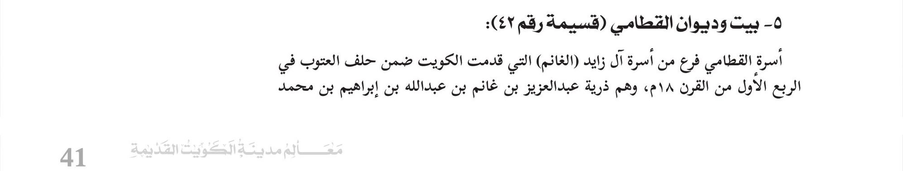
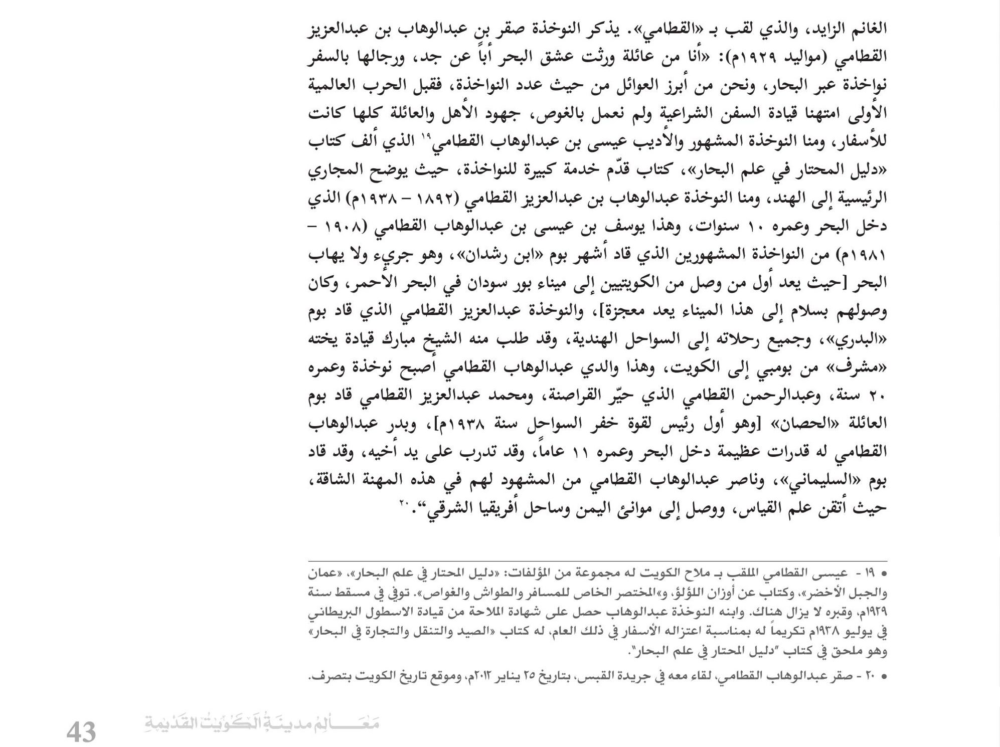

Published 2024 · Book pages 41 and 43, cut to the Al-Qatami section
The Al-Qatami house and diwan, plot 42, in the Landmarks of Old Kuwait Town
What it is
The chapter on the Al-Qatami house and diwan, plot 42 in Fereej Ibn Rumi. It gives the family as a branch of Al Zayed (Al-Ghanim), descendants of Abdulaziz bin Ghanim bin Abdullah bin Ibrahim bin Mohammed Al-Ghanim Al-Zayed, known as «Al-Qatami». It then quotes Nakhuda Sager bin Abdulwahab bin Abdulaziz Al-Qatami, born 1929, naming the family's nakhudas: Eissa bin Abdulwahab and his book Dalil Al-Muhtar; Abdulwahab bin Abdulaziz, who went to sea at ten; Yousef bin Eissa, 1908 to 1981, of the boom Ibn Rashdan and the first Kuwaiti to reach Port Sudan; Abdulaziz of the boom Al-Badri, whom Sheikh Mubarak sent to bring the yacht Mushrif from Bombay; Abdulrahman, «who baffled the pirates»; Mohammed bin Abdulaziz of the family boom Al-Hisan, first head of the Coast Guard in 1938; Bader bin Abdulwahab of Al-Sulaimani; and Naser bin Abdulwahab, who reached Yemen and East Africa. Footnote 19 covers Eissa's books, his death and grave in Muscat in 1929, and his son Abdulwahab's navigation certificate of July 1938.
Why it matters
It confirms the house and diwan as plot 42 and records Sager's own account of three generations of family nakhudas.
Page copies


Notes
Page 42 is not shown here. The book gives Abdulwahab bin Abdulaziz's years as 1892 to 1938, but he was still commanding Al-Daw until 1941 and the family records his death in 1963, so those years are not used on his profile. The family knows that it was his son Abdulwahab, not Abdulaziz himself, who was first called Al-Qatami.
Sources
Kuwait Center for Research and Studies, Ma'alim Madinat Al-Kuwait Al-Qadima, part 7, 2024, pages 41 and 43.
How this text was made: Page copies of a published book.
Open in the interactive site